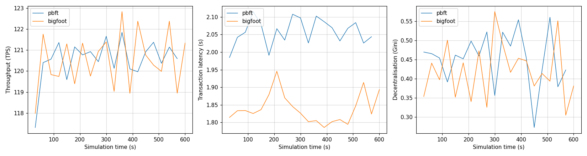

Compare two runs
In this tutorial you run PBFT and BigFoot on the same blockchain and plot their results side by side.
PBFT and BigFoot
Both protocols agree on each block through rounds of votes. In PBFT, the nodes vote twice for every block: first a prepare vote, then a commit vote. BigFoot has a shortcut, called the fast path. If every node sends its prepare vote, the block is added right away, without the commit votes. When all nodes are online and the network is fast, BigFoot should make blocks faster than PBFT.
1. Run PBFT
--name sets the name of the snapshot file.
This run saves its snapshots to Outputs/Snapshots/pbft.json.
Without --name, every run writes to snapshot.json and replaces the previous one.
2. Run BigFoot
Both runs use the same settings and the same seed. Only the consensus protocol is different.
3. Compare the results
The RESULTS of the two runs:
| PBFT | BigFoot | |
|---|---|---|
| Blocks | 394 | 461 |
| Throughput | 119.9 tx/s | 119.9 tx/s |
| Mean latency | 2.06 s | 1.84 s |
| Mean block time | 1.52 s | 1.30 s |
| Mean block size | 0.44 MB | 0.38 MB |
Both protocols confirm all 120 transactions per second, so the throughput is the same. BigFoot makes blocks more often, because the fast path skips the commit votes. Its blocks are smaller, and transactions wait less time for a block.
4. Plot the runs over time
SBS takes a snapshot every 30 simulated seconds. A snapshot holds the results for the blocks added since the previous snapshot.
Open the plotting notebook:
You can also open the notebook in your editor, for example VS Code.
In the second cell, list the two snapshot files:
Then run all cells. You get three plots:

Each point is one snapshot, so it shows the results of one 30-second window.
- Throughput stays close to 120 tx/s for both protocols.
- Latency is lower for BigFoot during the whole run.
- Decentralisation jumps up and down. A 30-second window holds only 20 to 25 blocks, so by chance some nodes make more blocks than others. Over the whole run, the Gini is much lower (0.12 for PBFT and 0.09 for BigFoot).
Your turn: push the protocols harder
At 120 transactions per second, both protocols keep up. Send more transactions and find the point where BigFoot takes a clear lead over PBFT.
Change the number of transactions per second with application.tx_per_sec.
Run the simulations from src/Simulator, as before:
Run both protocols at each rate, and give every run its own name.
Watch the throughput, the mean latency and the number of pending transactions.
A protocol is overloaded when it can no longer confirm all the transactions it receives.
Add the runs to names to see how the latency changes over time.
Tip
SBS visualizes runs by periodically taking 'snapshots' of the simulated blockchain state. The frequency of these snapshots thus has an effect on the visualization. To change how often SBS takes a snapshot, use simulation.snapshot_interval.
So far, all nodes stay online. In the next tutorial, some nodes fail during the run, and BigFoot's fast path stops working.